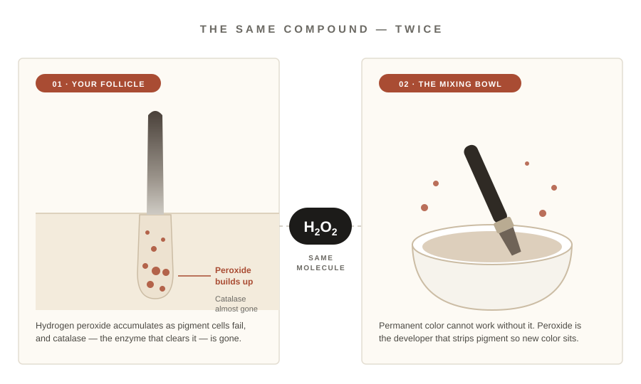
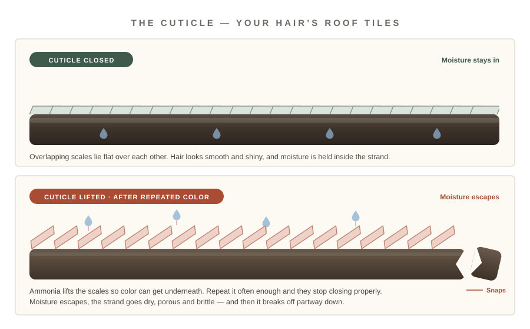

The Hidden Chemicals Inside Salon Dye That Are Quietly Breaking Your Hair Off
Two of them. Both legal. Both in almost every permanent color. And one of them is the exact same chemical your body makes when it turns your hair gray in the first place.

“Ten seconds in the car before a meeting. My colorist still hasn’t worked out why I stopped booking every three weeks.”
If you’re a woman over 40, you’ve probably already found your first grays. And nobody enjoys that morning. So you do the sensible thing — you book the salon. Of course you do. It’s the best result, it’s the most natural, it’s the safest, it’s the fastest, and it’s what everyone does.
That’s what most of us believed. Then in 2009, a team of researchers published something in The FASEB Journal that quietly changed the conversation. They took human hair follicles and found that gray hair isn’t really “turning” gray at all.
It’s bleaching itself. From the inside.
The editor of the journal put it about as plainly as a scientist ever will: all of our hair cells make a tiny bit of hydrogen peroxide, and as we get older, that tiny bit becomes a lot. We bleach our own pigment from within.
Now hold that word. Hydrogen peroxide. You’re going to see it again in about ninety seconds, and it’s going to bother you.
The Cycle Nobody Warns You About
You walk out of that first appointment and you look incredible. Two weeks go by. You catch your part line in the bathroom mirror and there’s a thin silver line sitting there. You tell yourself it’s the lighting. Week three, it isn’t the lighting.
So you book again. And this time you notice you booked sooner than last time. And the time after that, sooner again. Six weeks became five. Five became four. Now you’re looking at the calendar wondering how it became a monthly bill.
Illustrative pattern only — replace with your own survey or customer data before publishing.
Most women assume this is just aging speeding up. A coincidence. Bad luck. It isn’t a coincidence. There’s a reason the gap keeps shrinking, and it has nothing to do with your age and everything to do with what’s sitting in that bowl.
And here’s the uncomfortable part. The shorter your gap gets, the better it is for everyone selling you the fix. Nobody is scheming. It’s just that a business built on you coming back has no reason to want you coming back less.
Hydrogen Peroxide — The One You Already Met
Permanent color can’t work without it. Hydrogen peroxide is the developer. Its job is to strip out the pigment already in your hair so the new color has somewhere to sit. No peroxide, no lasting color. That’s just chemistry.
Go back to that 2009 study. Researchers found that gray and white hair shafts had built up hydrogen peroxide in millimolar concentrations — a lot, in plain English. And the enzyme that’s supposed to clear it out, catalase, was almost completely gone.

Explanatory illustration. The two peroxide sources are shown side by side; the study did not test salon developer.
So the picture is this. Your hair goes gray because hydrogen peroxide builds up in the follicle and destroys your pigment. And then, to cover the gray, you sit in a chair for forty-five minutes with more hydrogen peroxide on your head.
Read that twice.
Gray and white hair shafts had accumulated hydrogen peroxide in millimolar concentrations, while catalase — the enzyme that normally breaks it down — was almost entirely absent.
Summarised from research published in The FASEB Journal, 2009. Search “FASEB Journal hydrogen peroxide gray hair 2009” — verify and cite the paper properly before publishing.
Nobody is saying the bottle on the shelf and the peroxide in your follicle are doing the identical job. They aren’t. But it is the same compound, and researchers are clear that repeated peroxide exposure weakens the hair shaft and adds to the oxidative stress on your scalp. You are treating a peroxide problem with peroxide.
If that were the only thing in the bowl, this would already be worth knowing. It isn’t the only thing in the bowl. And honestly, it isn’t even the one doing the most damage to how your hair actually feels.
●Black sells out more often than it’s in stock
Ammonia — The One Breaking Your Hair Off
Your hair has a protective outer layer called the cuticle. Think of roof tiles lying flat over each other. That’s what keeps moisture in and keeps your hair smooth and shiny. Ammonia’s job is to pry those tiles open so the color can get underneath.
Every single time you do it, those tiles get lifted. Do it once, your hair recovers. Do it every four weeks for a few years and the cuticle stops closing properly. Moisture escapes. Hair goes dry, rough, porous, brittle. Then it snaps.

Simplified illustration of cuticle scales lying flat versus lifted. Not to scale.
And this is the part women get wrong about themselves. You look in the mirror and see less hair, and you think I’m losing my hair. Usually you aren’t. Your follicles are fine and still working. Your strands are breaking off partway down, which makes your hair look thinner, flatter and shorter around the face.
There’s also PPD — the ingredient that makes dark shades dark, and one of the most common allergens in permanent color. In one large Dutch study of nearly 71,000 people, about 6.8% of dye users reported some kind of adverse skin reaction. Most are mild: itching, redness. But in the rare cases where it turns into a real chemical burn on the scalp, that damage can be permanent. That’s the version that actually costs you hair for good, and it’s the reason patch tests exist.
Here’s the thing though. None of this means never color your hair again. Ammonia in your hair four times a year is fine. Ammonia in your hair fourteen times a year is a different conversation. Your scalp is skin. Skin needs recovery time between anything harsh, and most colorists will tell you to leave 8 to 10 weeks between permanent color sessions.
Eight to ten weeks. Now go back and count how many weeks it takes your roots to show.
So What Are You Actually Supposed To Do?
This is the trap, and it’s worth naming out loud. Your hair needs about 8 to 10 weeks off. Your grays show up in 3.
Recovery time most colorists recommend between permanent color sessions.
How long until that silver line along your part is impossible to ignore.
That leaves you with five or six weeks a year — every year — where the “correct” choice is to just walk around with a silver stripe down your part and be fine with it. And let’s be honest about what that actually feels like.
It’s the 9am video call where you spend the whole meeting tilting your head, watching your own square in the corner instead of listening. It’s the wedding photos you already know you’re going to scroll past. It’s standing next to a friend your age who somehow always looks put together, and doing that quiet little bit of math. It’s not vanity. It’s the feeling of not looking like yourself.
You shouldn’t have to pick between wrecking your hair and feeling invisible for six weeks a year. And you don’t. Because that in-between gap is a solved problem — just not here.
What Korean Women Have Been Doing Instead
In Korea, covering your roots isn’t a whole event. There’s no bowl, no gloves, no developer, no sitting there in foils hoping it doesn’t come out brassy. There’s a stick. It looks like a chunky lip crayon with fine comb teeth at the tip. You twist it up, swipe it along your part line and your temples, and the gray is gone. It takes about ten seconds and one hand.

It’s makeup for your hair
- ✓ 10 seconds, one hand, one mirror — car, work bathroom, anywhere
- ✓ Micropigment powder holds 20+ hours — not on your collar or your pillow
- ✓ Blends into your real color — not the flat sprayed-on look everyone can spot
- ✓ Washes out with normal shampoo — zero commitment, zero grow-out line
The comb teeth are the whole idea
Instead of spraying color everywhere and hoping, the teeth carry the pigment down the hair you can actually see.
The pigment goes onto the strand rather than soaking into the skin underneath it.
Nothing gets opened up. No peroxide and no ammonia in the equation at all, because it isn’t dye.
It’s cosmetic, so it’s not part of your 8-to-10 week budget. Your hair gets its recovery time and you still get to look like yourself on a Tuesday.
It won’t color your hair. That’s the point. It covers what shows, today, and leaves the biology under it alone.
 BEFOREAFTER
BEFOREAFTER
Example result shown in Medium Brown. Replace with your own photography and note that results vary.
Twist
Wind the stick up about two millimetres. That’s all you need.
Swipe
Comb it along your dry part line and temples in short strokes.
Go
Done in ten seconds. Shampoo it out whenever you like.
Jamie Taylor The peroxide thing genuinely bothered me. I went and read the box after this. Third line down, exactly like she said.Like · Reply · 3w
👍 22Alex Nguyen I’m not giving up my colorist. I just stopped going every three weeks, which was the whole point.Like · Reply · 2w
❤️ 14Rosa Chen Bought it for the in-between weeks. It lives in my handbag now. Medium brown blended in perfectly.Like · Reply · 5d
👍 9